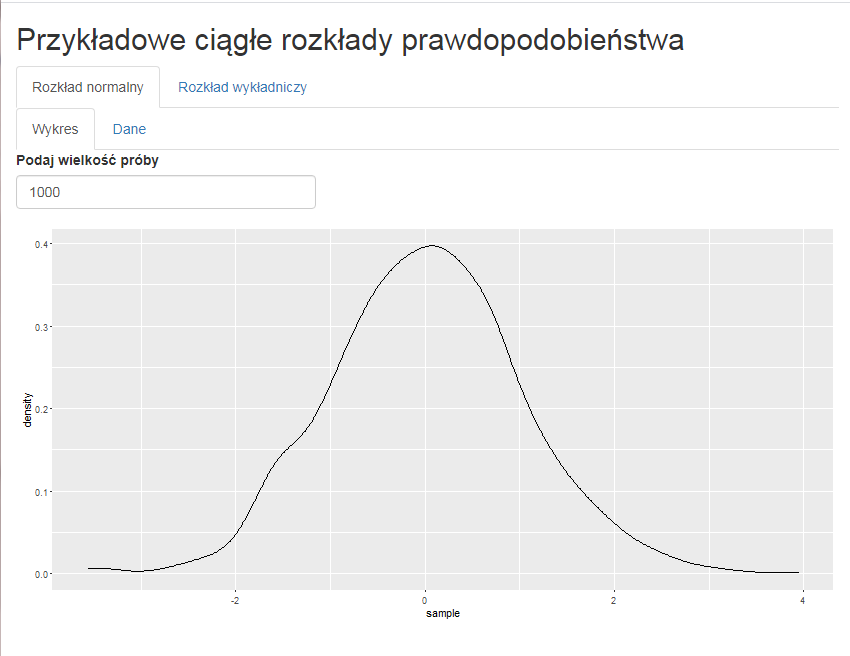

13 Moduły w aplikacjach shiny
13.1 Czym jest moduł Shiny
Modułem Shiny nazywamy odrębny kawałek aplikacji Shiny. Moduł nie może być wywołany niezależnie od reszty aplikacji. Traktuje się go jako część większej aplikacji lub większego modułu Shiny (moduł może składać się z modułów).
13.1.1 Dlaczego warto używać modułów Shiny?
Uproszczenie kodu - moduły pozwalają nam na uporządkowanie złożonego kodu w przypadku dużych i skomplikowanych aplikacji
Własna przestrzeń nazw - w aplikacjach shiny ID obiektów z inputów i outputów pochodzą ze wspólnej przestrzeni nazw. To znaczy, że ID każdego z obiektów w całej aplikacji musi być unikalne. Jako że moduł jest osobną funkcją wywołaną w aplikacji, posiada własną przestrzeń nazw. Wystarczy zatem, że ID obiektów są unikalne wewnątrz modułu.
Recykling - ponieważ moduł Shiny jest niezależną funkcją, może być użyty zarówno wiele razy w jednej aplikacji, jak i w wielu różnych aplikacjach. Dzięki temu można z łatwością przechowywać gotowe fragmenty aplikacji w eRowych pakietach i wykorzystywać je w razie potrzeby.
13.2 Budowa modułu Shiny.
kawałek UI - funkcja odpowiadająca za User Interface w module Shiny
kawałek serwera - funkcja zawierająca fragment serwera, który jest wykorzystywany w UI
13.2.1 Jak używać modułów Shiny?
Rozważmy aplikację składającą się z dwóch paneli - każdy z wykresem i danymi dla dwóch rozkładów, otrzymaną za pomocą poniższego kodu:
library(shiny)
library(ggplot2)
ui <- fluidPage(
tabsetPanel(
#generujemy panel dla rozkładu normalnego
tabPanel(title = "Rozkład normalny",
tabsetPanel(
tabPanel(
title = "Wykres",
numericInput(inputId = "normal_n",
label = "Podaj wielkość próby",
value = 1000),
plotOutput("normal_plot")
),
tabPanel(
title = "Dane",
tableOutput("normal_data")
)
)
),
#generujemy panel dla rozkładu wykładniczego
tabPanel(title = "Rozkład wykładniczy",
tabsetPanel(
tabPanel(
title = "wykres",
numericInput(inputId = "exp_n",
label = "Podaj wielkość próby",
value = 1000),
plotOutput("exp_plot")
),
tabPanel(
title = "Dane",
tableOutput("exp_data")
)
)
)
)
)
server <- function(input, output, session) {
#generujemy dane
normal_data <- reactive({
set.seed(17)
data.frame(id = 1:input[["normal_n"]],
sample = rnorm(input[["normal_n"]]))
})
exp_data <- reactive({
set.seed(17)
data.frame(id = 1:input[["exp_n"]],
sample = rnorm(input[["exp_n"]]))
})
#generujemy tabele
output[["normal_data"]] <- renderTable({
normal_data()
})
output[["exp_data"]] <- renderTable({
exp_data()
})
#generuemy wykresy
output[["normal_plot"]] <- renderPlot({
ggplot(normal_data(), aes(x = sample)) +
geom_density()
})
output[["exp_plot"]] <- renderPlot({
ggplot(exp_data(), aes(x = sample)) +
geom_density() +
xlim(0, 5)
})
}
shinyApp(ui, server)Aplikacja wygląda następująco:

W naszej przestrzeni wykorzystaliśmy nazwy:
inputy - normal_n, exp_n
outputy - normal_plot, normal_data, exp_plot, exp_data
Co daje razem 6 obiektów. W aplikacji UI zajmuje 36 linijek kodu, a server 29, razem 65 linijek.
Zrefaktoryzuemy kod powyższej aplikacji przy użyciu modułów Shiny. Za powtarzające się elementy (tj. panele z wykresem i danymi) będą odpowiedzialne następujące funkcje module_UI oraz module_SERVER (odpowiedniki UI oraz servera dla odrębnego fragmentu aplikacji).
module_UI <- function(id) {
ns <- NS(id)
tagList(
tabsetPanel(
tabPanel(
title = "Wykres",
numericInput(inputId = ns("n"),
label = "Podaj wielkość próby",
value = 1000),
plotOutput(ns("plot"))
),
tabPanel(title = "Dane",
tableOutput(outputId = ns("data"))
)
)
)
}Na szczególną uwagę w powyższym kodzie zasługuje linijka
ns <- NS(id)Za pomocą funkcji NS() tworzymy osobną przestrzeń nazw ID.
module_SERVER <- function(id) {
moduleServer(id, function(input, output, session) {
#generujemy dane
data <- reactive({
set.seed(17)
data.frame(id = 1:input[["n"]],
sample = rnorm(input[["n"]]))
})
#generujemy wykres
output[["plot"]] <- renderPlot({
ggplot(data(), aes(x = sample)) +
geom_density()
})
#generujemy tabelę
output[["data"]] <- renderTable({
data()
})
})
}Ostatecznie nasza aplikacja używająca pomocniczego modułu wygląda następująco
library(shiny)
ui <- fluidPage(
titlePanel("Przykładowe ciągłe rozkłady prawdopodobieństwa"),
tabsetPanel(
#generujemy panel dla rozkładu normalnego
tabPanel(title = "Rozkład normalny",
module_UI("norm")
),
#generujemy panel dla rozkładu wykładniczego
tabPanel(title = "Rozkład wykładniczy",
module_UI("exp")
)
)
)
server <- function(input, output, session) {
module_SERVER("norm")
module_SERVER("exp")
}
shinyApp(ui, server)Powyższy kod jest czytelniejszy, krótszy, a także rozwiązuje problem wielu zmiennych.